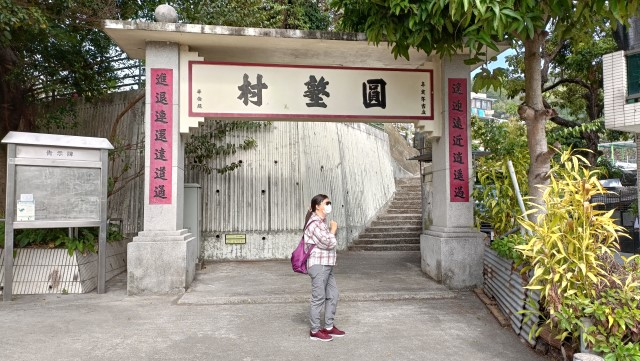
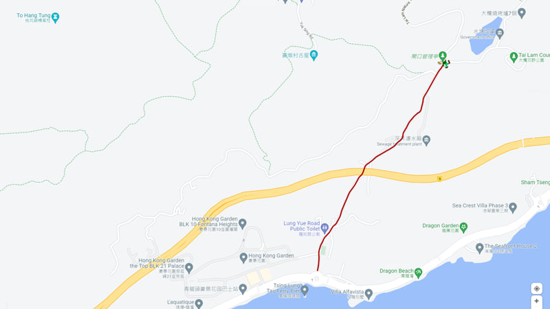
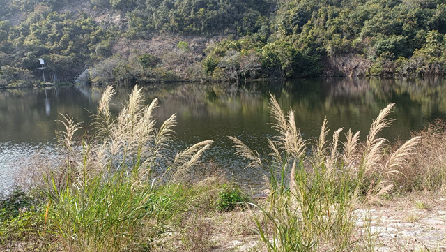
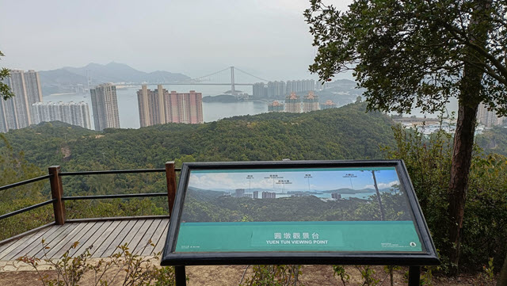
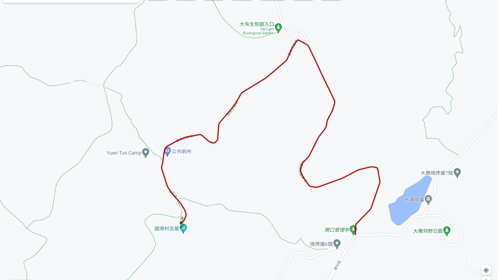
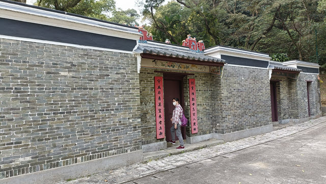
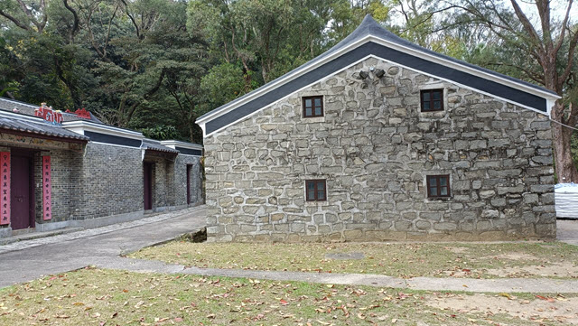

在2022年2月12日的早上，我和 Alex 臨時計劃往大欖郊野公園的深井水塘及圓墩村古屋遊覽。
二話不說，立即出發。
我們首先從荃灣沿海濱步道走到深井。當抵達深井時，已經是中午12:30, 便往深井陳記燒鵝買了兩個飯盒，然後步行到釣魚灣，坐在沙灘旁的櫈子上，一邊欣賞海景，一邊吃，環境一流。
吃完午餐，繼續沿海濱步道走到青龍頭。
我們約下午2:20來到青龍頭的龍如路，這裡可以說是今天的郊遊遠足正式起點，從這裡步行到大欖郊野公園，首先遊覽深井沉澱池，然後再步行到圓墩村古屋。
沿龍如路往上只走一會，右邊是圓墩村, 前身便是我們稍後遊覽的圓墩村古屋。圓墩村入口有一個牌坊，上下對聯除了工整外，全部字的部首都是撐艇仔，相當特別。
繼續沿龍如路往上走。
走過圓墩村及青龍頭新村後，迎面是高高的屯門公路。
從屯門公路的橋底下穿過，繼續沿龍如路往上走，感覺已經進入了鄉郊。
龍如路不太傾斜，走起來並不吃力，但是交通非常繁忙，有如市區，而道路頗為狹窄，不時要躲避車輛。總的來說，這段路並不好走。
沿龍如路走了約半小時，經過深井濾水廠，再往上走一會，便來到大欖郊野公園的入口。
進入大欖郊野公園，繼續往上走一會便來到龍如路的盡頭，不經不覺向上攀升到海拔120米高的地方了。
迎面是一個分叉路口。前面上山的路是「大欖自然教育徑」，右邊平緩的路是「大欖林道 — 深井水塘段」
。
我們首先往深井水塘遊覽，在這裡轉右走。這一段路的交通仍然繁忙，不可以安心的走。而道路中稍有寬闊的地方便被利用成為泊車的地方，完全沒有郊野公園的感覺。
走一會便來深井水塘的堤壩。
深井水塘 (也稱為深井沉澱池) 位於大欖郊野公園邊緣，主要水源來自深井清快塘的「鬼怒坑」，經深井濾水廠過濾後，直接為深井一帶居民提供食水。
深井水塘還有另一個功能，就是收集附近的山水，當滿溢時，便經地下管道流往大欖涌水塘儲存。
深井水塘四周風景不錯，除了湖水山色外，更可眺望深井山谷壯麗景色。
遊覽完深井水塘，接著下一個行程是往圓墩村古屋。
掉頭循原路走，不一會便來到大欖自然教育徑入口。只要沿大欖自然教育徑及圓墩郊遊徑一直走便可抵達圓墩村古屋，路線十分簡單。
大欖自然教育徑入口位於海拔120米高，而圓墩村古屋則位於山中海拔203 米高的地方，所以要向上走一段頗為長的山路才可到達。
大欖自然教育徑是一條彎彎曲曲，蜿蜒上山的長命斜，走起來有點吃力的。
途中會經過圓墩觀景台，沿左邊的石階往上走一會便抵達。圓墩觀景台視野很好，可眺望深井、青龍頭、馬灣、汲水門大橋及大嶼山，景色壯麗。
在圓墩觀景台欣賞完風景，沿大欖自然教育徑是繼續往上走。
沿途景色不俗，不時停下來欣賞風景。
大欖自然教育徑還有一個特色, 就是…… 因為幾乎所有旅客都帶同汪汪一起來, 所以, 人和汪汪的數量差不多!
沿大欖自然教育徑走了約35分鐘，來到一個分叉路口，繼續往前走可到達田夫仔，而左邊是圓墩郊遊徑的入口。
我們是往圓墩村古屋，在這裡轉左往上走，又是另一條長命斜。
沿圓墩郊遊徑走了15分鐘，便來到民安隊圓墩營。
走下一段斜坡，迎面是一個大草坪。圓墩郊遊徑在這裡右拐往山上，最後在大欖涌水塘附近的元荃古道和大欖自然教育徑會合。
我們是往圓墩村古屋，在這裡轉左走。穿過大草坪。走過一個頗為日式的庭園。來到一個分叉路口。兩條路都是往圓墩村古屋。
我們選擇了循大路繼續向前走。走下斜坡, 穿過另一個大草坪，就來到位於山谷中、海拔203 米高、昔日的圓墩村。
曾一度繁盛的古村，到了現在，大部份屋子已經被拆掉，只餘下這幾間古屋，見證過往的歷史。
圓墩村先民源自廣東梅州五華縣，於二百多年前遷移到青龍頭山谷中這裡居住，靠種植稻米為生。據說在高峰時期，這裡居住了三百多個村民。六十年代，當大欖涌水塘建成後，圓墩村的水源漸漸枯竭，無法耕種。港府於1969年把村民遷移到青龍頭海邊的龍如路旁，另建成今日的圓墩村。當所有村民遷離後，山中的村落也被荒廢。2010 年， 圓墩村古屋被評為香港三級歷史建築物，讓這裡得以保留下來。古屋經復修後，現成為圓墩博物館，交由民安隊管理。
 遊覽完圓墩村古屋, 已經是下午5:00, 離太陽下山只有半小時, 要立即離開啦。
我們循圓墩村古屋旁的小路離開。穿過小路, 便返回日式庭園旁的道路。
接著沿圓墩郊遊徑一直走到盡頭, 再轉右循大欖自然教育徑走。
走了一半路程, 太陽已開始西下。
當返回山下的龍如路時, 街燈已經亮起。
接著在圓墩村旁的小巴站, 乘 96M 綠色專線小巴返回荃灣。
就這樣結束了今天的大欖郊野公園遠足行程啦！